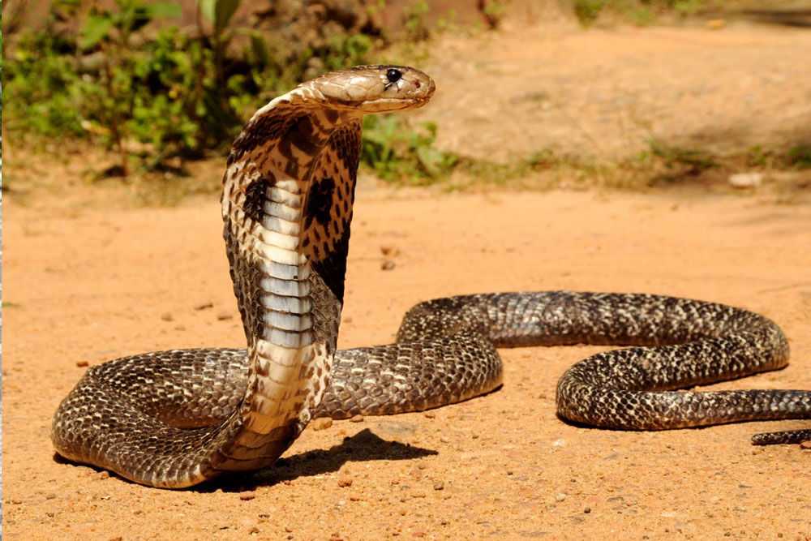

Animals

Sri Lankan Cobra
The Sri Lankan cobra (Naja naja) is a venomous snake species found in Sri Lanka and other parts of South Asia.

Brown Mongoose
The brown mongoose found in Sri Lanka is likely the Indian brown mongoose (Herpestes fuscus), also known as the Indian gray mongoose or the common gray mongoose.

Peacock
The Sri Lankan peafowl, scientifically known as Pavo cristatus, is a captivating bird celebrated for its vibrant plumage.